[CCNA图文笔记]-6-Ubuntu使用GNS3+IOU搭建Cisco试验环境
引言
GNS3在经历过一次大版本的更新后，终于能够完美的使用IOU，并且GNS3官方也提供了IOU的虚拟机版本，这无疑对学习思科技术的朋友是一个福音，IOU技术使GNS3不仅仅可以完成路由实验，还能完成交换机实验；
这篇文章使用Ubuntu演示GNS3+IOU环境的搭建，使用Windows的朋友也不用担心，虽然本文是在Ubuntu系统演示，但两个系统的安装思路是相同的，安装过程中的不同之处本文会给出说明。
本文完成时，最新的GNS3+IOU版本是1.4.6，也许并不是现在的最新版本，但搭建环境的思路和步骤已经全部给出，参考这个思路完成新版本的安装相信也不是问题。
文章目录
0×1.安装前的准备工作
1）下载GNS3
GNS3支持三种系统：Windows，Linux以及MacOS；Windows用户请先到[GNS3官方网站]下载GNS3最新版本（已提供百度网盘下载地址在本段末尾），点击"FREE DOWNLOAD"（需要注册一个账号）,登陆后，选择Windows版本下载，双击下载的文件安装，请勿安装在中文目录，保持目录无空格；
Ubuntu用户可以直接使用终端来安装（仅64位支持），如下：
#1.安装GNS3-GUI qing@qingsword.com:~$ sudo add-apt-repository ppa:gns3/ppa qing@qingsword.com:~$ sudo apt-get update qing@qingsword.com:~$ sudo apt-get install gns3-gui #2.安装GNS3-IOU模块 qing@qingsword.com:~$ sudo dpkg --add-architecture i386 qing@qingsword.com:~$ sudo apt-get update qing@qingsword.com:~$ sudo apt-get install gns3-iou #如果遇到软件关联问题，请先更新系统，如下，然后再进行安装 qing@qingsword.com:~$ sudo apt-get update && sudo apt-get upgrade
Windows版GNS3[百度网盘]下载地址，版本为"GNS3-1.5.2-all-in-one"。
2）下载IOU镜像
前往[GNS3官方Github]，下载最新版本VMware的IOU镜像，本文完成时，最新的IOU镜像为"GNS3.VM.VMware.Workstation.1.4.6.zip"，解压缩后会得到一个后缀为".ova"的文件，一会要用VMware导入的就是这个文件；
注意：IOU的版本要和GNS3主版本一致，例如本例下载的GNS3是1.4.6，那么这个IOU也必须是1.4.6的，才能正常连接，本文的最后一节会演示在GNS3版本升级后，如何升级IOU到最新版；
Ps：笔者在上面给出的Github页面中下载这个IOU镜像时，一直没有下载速度（可能被qiang了），不得已只能用境外的一台服务器下载好后再从它上面下载回本地，本来想将这个压缩包传到网盘提供下载，但考虑到GNS3的版本更新，上传的镜像可能因为版本不同无法正常和GNS3连接，如果大家也遇到了相同的问题，有这方面的需求可以和我联系，我会上传最新的IOU镜像到网盘方便大家下载；
GNS3_IOU[百度网盘]下载地址，这个版本为"GNS3.VM.VMware.Workstation.1.5.2"。
3）下载并安装VMware
请参考本站这篇文章[[ubuntu入门手册]-6-安装VMware Workstation for Linux]，内容同样适用于Windows，文中提供了最新版本的VMware激活Key；
4）下载GNS3组件Vpcs
前往[VPCS下载地址]，这个地址是GNS3官方Github项目中指定的地址，本文完成时最新版是0.8；
注意：只有0.6.1和0.8b这两个版本才支持GNS3.1.4.6；
Ps：通过实验后发现，最新版的0.8b for Linux在Ubuntu上存在一个Bug，使用任何命令都只会输出命令对应的帮助，不清楚Windows版会不会这样，所以我改用了0.6.1 for linux这个版本[0.6.1 for linux下载地址(64位版)]；
4）下载IOS
路由器IOS：[unzip-c3640-ik9o3s-mz.124-10.bin]
交换机IOS：[i86bi-linux-l2-adventerprisek9-15.1a.bin]
5）下载CiscoIOUKeygen
用于计算IOU许可号iourc：[CiscoIOUKeygen.py]
建议将上面所有下载或安装的软件都放在全英文命名的目录（路径中没有中文或空格），准备工作完成。
0×2.配置IOU镜像虚拟机
如果对VMware虚拟机不是很熟悉的朋友，建议去学习一下虚拟机的基础知识，本文不会对这些基础做过多的解释。
打开VMware，在菜单中选择"File"->"Open"，找到第一节第2部分下载解压缩后的ova文件打开，然后在弹出的对话框中点击"Import"；
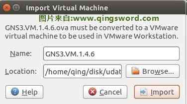导入成功后就能看到配置界面，先不要急着开机，根据自己机器的内存调整一下这个虚拟机的内存大小；"Network Adapter2"是NAT方式，暂时用不到，可以在配置页面中将"Connect at power on"取消；
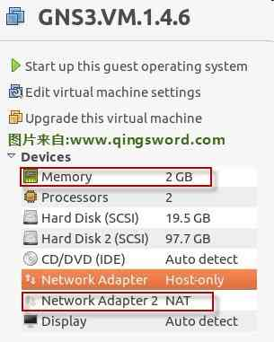在VMware菜单"Edit"->"Virtual Network Editor"中，查看vmnet1所对应的网段，本例是"192.168.100.0/24"（建议都更改成这个网段，本系列文章后面使用到IOU时，都是使用这个网段），如下图；
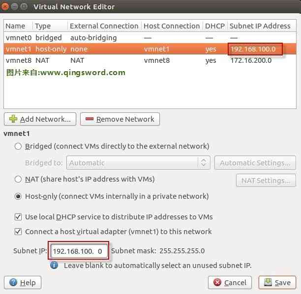并且在终端中可以查看到vmnet1这块虚拟网卡所对应的IP地址是192.168.100.1
#Windows在cmd中使用ipconfig命令查看，下面是Ubuntu终端下的查看命令，这个IP地址（192.168.100.1），就是IOU虚拟机的网关地址，也是这个IOU与物理机通信的桥梁 qing@qingsword.com:~$ ifconfig vmnet1 Link encap:以太网 硬件地址 00:50:56:c0:00:01 inet 地址:192.168.100.1 广播:192.168.100.255 掩码:255.255.255.0
启动这个虚拟机后，会看到这个IOU的综合信息提示页面，包含了这个IOU第一次启动，使用DHCP从vmnet1获取到的IP地址（本例中这个IP地址是我改过的静态地址，后面会介绍更改方法，最好将它更改成静态IP地址，这样就不需要重复计算IOU的许可号了），这个IOU上传IOS的地址，以及ssh连接密码，如下图；
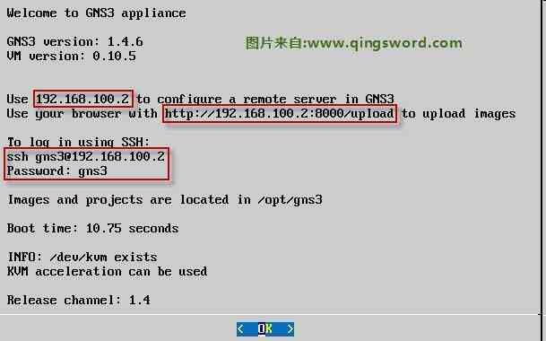Ok回车，进入下面的界面，选中Networking配置网络，回车后提示会在更改后重启，继续回车；
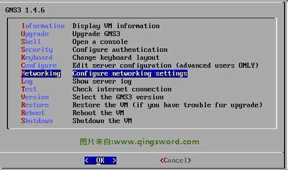将第一个红框前面添加#注释掉，将下面的iface静态配置取消注释，并且更改成下图所示，其中的网关地址和DNS地址就是vmnet1的地址，更改完成后按"Ctrl+o"保存，会提示你保存文件，直接默认回车，然后"Ctrl+x"退出编辑，此时虚拟机会自动重启；
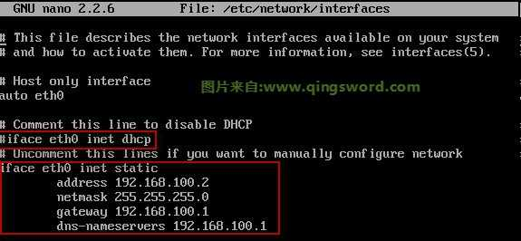重启之后，在综合信息提示页面发现IP并没有变化，这是这个程序的一个小bug，只需要再重启一次，就能看到IP更改成了192.168.100.2；
用浏览器打开"http://http://192.168.100.2:8000/upload"，重复下图的步骤，将"CiscoIOUKeygen.py"和"i86bi-linux-l2-adventerprisek9-15.1a.bin"这两个文件都上传到IOU中；
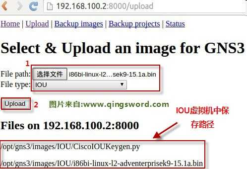上传完成后，进入IOU的命令界面，选择Shell启动终端（网上有很多朋友说，这个终端老外没有提供root密码，实际上root并没有设置密码，可以使用sudo passwd root来给root创建一个密码）；
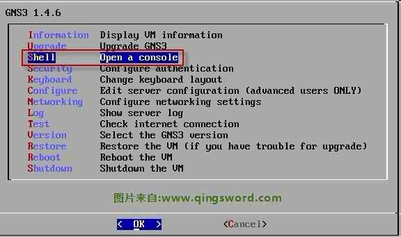进入我们上传文件的目录，使用命令"python3 CiscoIOUKeygen.py"获取许可号，将第二个红框中的两行抄写下来，在物理机中保存成"iourc.txt"文本文件，在第三节配置GNS3时要用到这个许可文件，第二行末尾是一个英文的分号，不要漏掉了，笔者就犯过这种错误，漏掉了一个分号，导致IOU无授权文件无法启动；
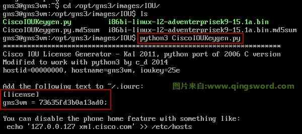每台电脑生成的License号都不相同，只要IOU虚拟机不更换hostname，不改变IP，这个License就能一直使用，这就是为什么上面要将IOU的IP设置成静态的原因；
至此，IOU的配置完成。
0×3.配置GNS3
Ubuntu终端中输入gns3来打开GNS3图形界面，第一次打开会弹出引导配置窗口，我们不用这个来配置，所以选择不再弹出，然后cancel；
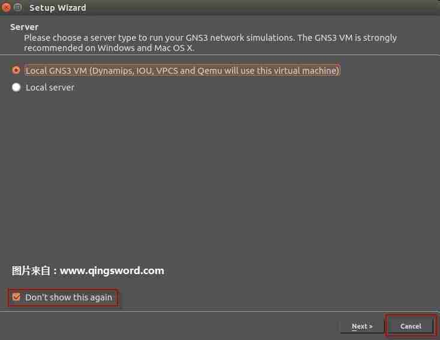在GNS3图形界面菜单中选择"Edit"->"Preferences"，在Server选项中，首先将"Local server"中本地IP设置成vmnet1这块虚拟网卡的地址192.168.100.2，端口8000，这样就能确保IOU中的交换机与物理机中的路由器进行连接（如果连线的时候提示交换机和路由器不能连接，请检查vmnet1是否被禁用，IP地址是否配置正确）；然后去掉"Local GNS3 VM"下面的勾选，如果这里勾选上，每次启动GNS3，VMware也会被启动，并且自动启动其中的IOU虚拟机，我们并不是每次都需要做交换实验，所以不用让VMware每次都一起启动，如果你想让VMware每次都随GNS3启动，可以勾选"Enable The Local GNS3 VM"，并将启动虚拟机设置成下面第二张图红框中那样；
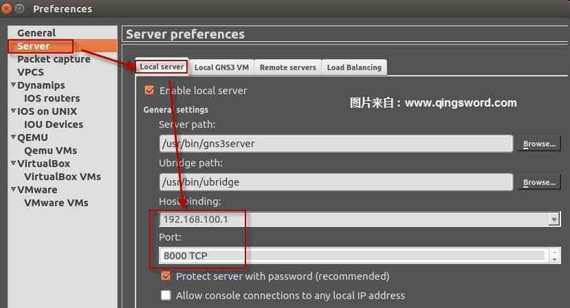 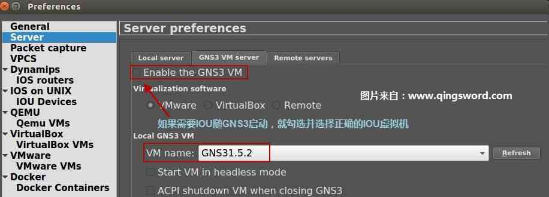切换到"Remote Services"，添加IOU虚拟机的IP地址和对应端口8000，Server选项就配置完成了；
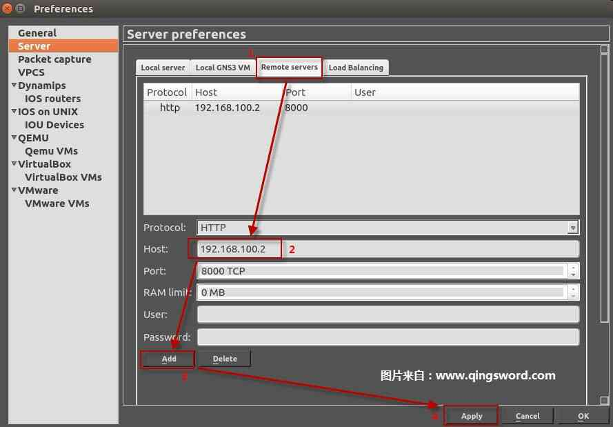在VPCS选项中，选择下载的vpcs组件，请先在vpcs所在目录使用终端运行"sudo chmod +x vpcs"命令给vpcs添加可执行权限，本例我将它放在了/usr/bin目录中；
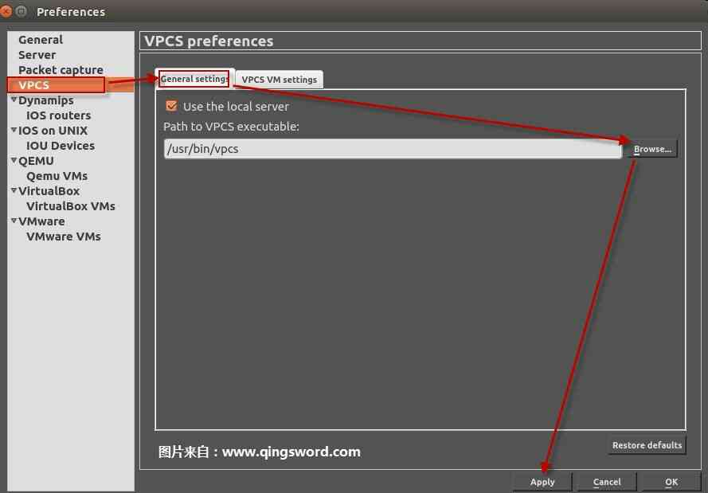在"IOS routers"选项中，点击"New"按钮，新增一个IOS，选择在本地运行IOS，通过实验发现，路由IOS直接在物理机运行比在IOU中运行占用资源更少，所以只让交换机IOS在虚拟机中运行就可以了；
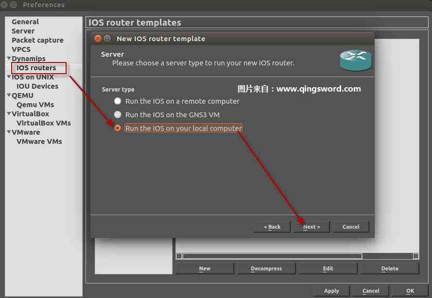浏览到第一节中下载的路由器IOS（c3640），GNS3会询问你是否将这个IOS拷贝到默认目录中，如果你存放这个IOS的目录并不包含中文和空格，建议选No，之后可能会弹出一个警告，需要手动设置这个IOS是哪个版本；
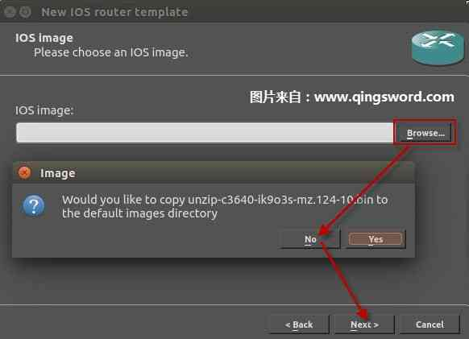手动选择IOS的版本，本文中提供的路由器IOS是c3640，然后选择这个IOS运行内存大小，请根据物理机配置调整这个内存，本例直接使用默认内存设置；
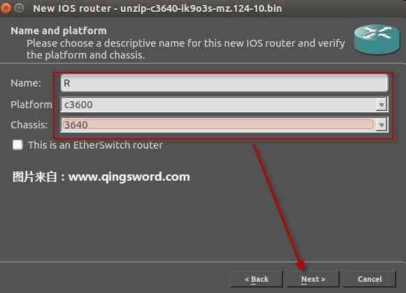 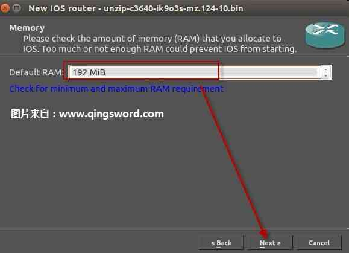配置路由接口，"NM-4T"是串口，"NM-1FE"是以太网口，接口模块在后期是可以调整的，这里暂时只配置一个串口模块和以太网模块（建议配置成一个串口和两个以太网模块，方便后面的实验）；
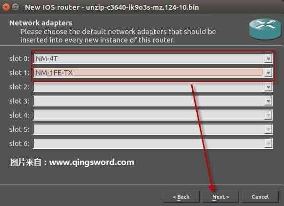最后，计算IDLE值，只有计算出这个值，IOS才不会在启动后占用物理机100%的CPU时间，全部配置完成后，回到最初的"IOS Routers"界面，点击"Apply"应用配置；
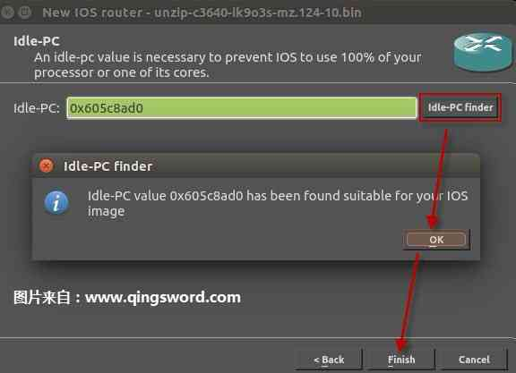配置"IOS on UNIX"，还记得第二节保存的那个iourc.txt许可文件吗？浏览到它的保存位置，这样启动IOU中的交换机IOS时，就不会报没有许可文件的错误了；
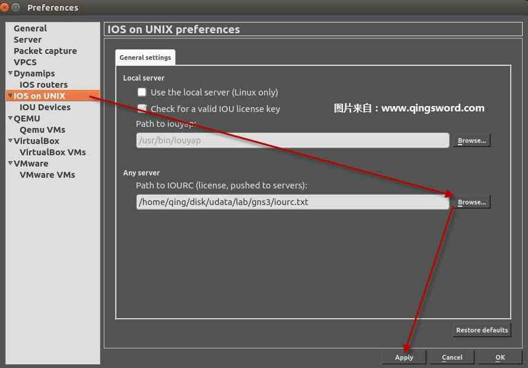启动VMware虚拟机中的GNS3.VM，在"IOU Devices"界面中，点击"New"，创建远程交换机，选择GNS3.VM虚拟机中我们在第二节已经上传好了的交换机IOS；
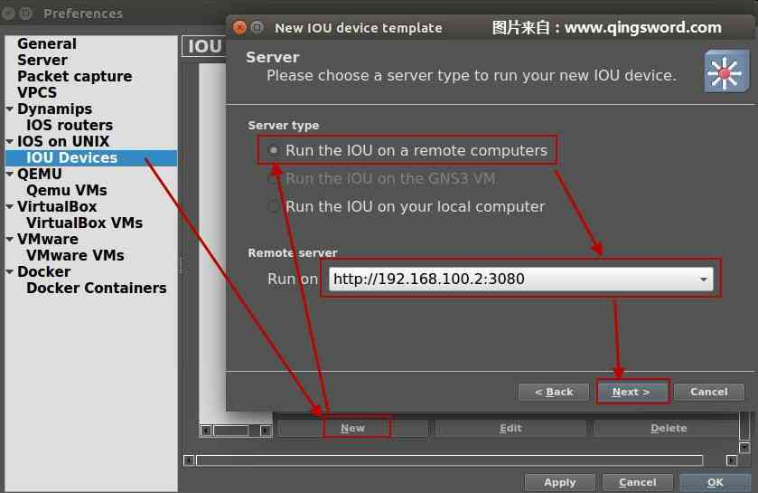 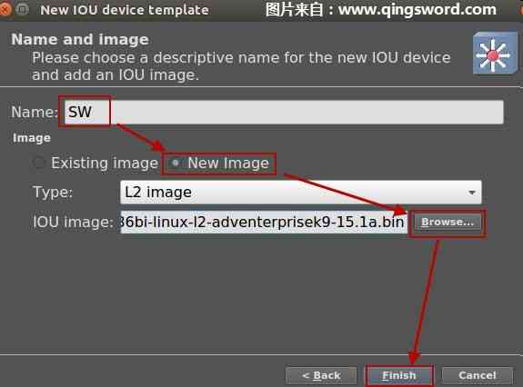最后，退回到"IOU Devices"界面，点击"Apply"应用配置；
到这里，我们配置了物理机可运行的路由器，虚拟机中可以运行的交换机，以及可以用于模拟简单PC的vpcs，已经能够完成CCNA全部的实验操作了，除此之外，GNS3还提供了VMware VM选项，可以配置虚拟机模拟复杂PC或Linux防火墙，本文写到这里篇幅已经过长，这一部分的内容就留给读者自己完成吧。
配置完成后主界面如下，R是我们配置的物理机中可运行的路由器，SW是虚拟机中的交换机，vpcs是简单PC，拖拽到右边区域后，可以连线使用，双击可以弹出对应设备控制台输入命令；
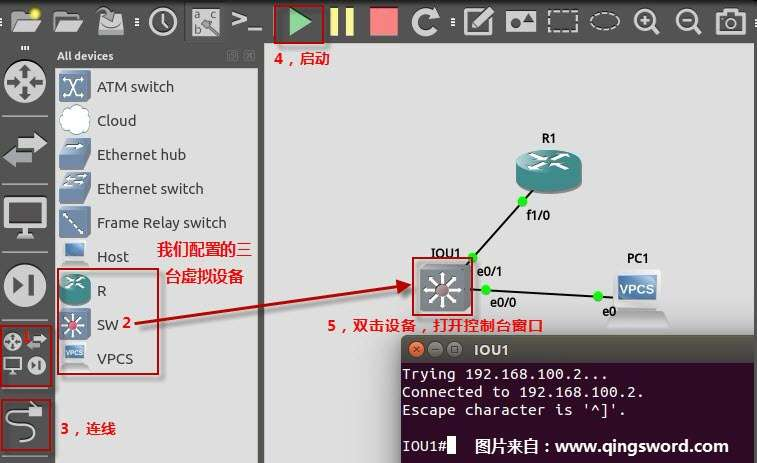注意：因为我们没有让VMware随GNS3启动，所以需要使用虚拟机中的交换机的时候，请先手动启动VMware并打开GNS3虚拟机，然后再启动GNS3，才能启动SW，顺序不能颠倒；
0×4.使用终端连接管理器PAC
在Windows中有个收费的软件SecureCRT，可用于连接和管理GNS3设备，在Ubuntu中也有一款相同功能的开源免费软件PAC（如果不想安装这些软件的朋友也没有关系，每次启动后双击每个设备在打开的终端中切换去输入命令，效果是一样的）。
首先，前往分享PAC的资源站[PAC Manager]，下载最新的PAC Manager，到本文完成时最新版是"pac-4.5.5.7-all.deb"，打开终端切换到下载目录安装PAC：
#安装过程中会出现关联错误，稍后处理它 qing@qingsword.com:~$ sudo dpkg -i pac-4.5.5.7-all.deb #安装所有关联程序 qing@qingsword.com:~$ sudo apt-get -f install #安装过程完成后，启动PAC qing@qingsword.com:~$ pac
启动后创建新的连接，假设现在GNS3里启动了两台路由R1，R2，根据GNS3的配置我们知道路由的控制端口是从2000开始的，那么R1就对应了2000，R2就对应了2001，以此类推，PAC无法连接IOU中的交换机，IOU中的交换机只能通过双击图标打开控制台配置，下面是使用PAC连接到R1的步骤；
首先创建新的连接，输入自定义的名称，为了与设备对应，本例输入R1；
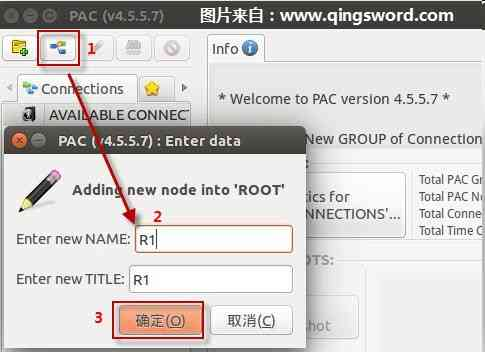进入配置界面，协议选择"Telnet"，IP使用本地回环127.0.0.1，端口2000，选择不需要密码的连接；
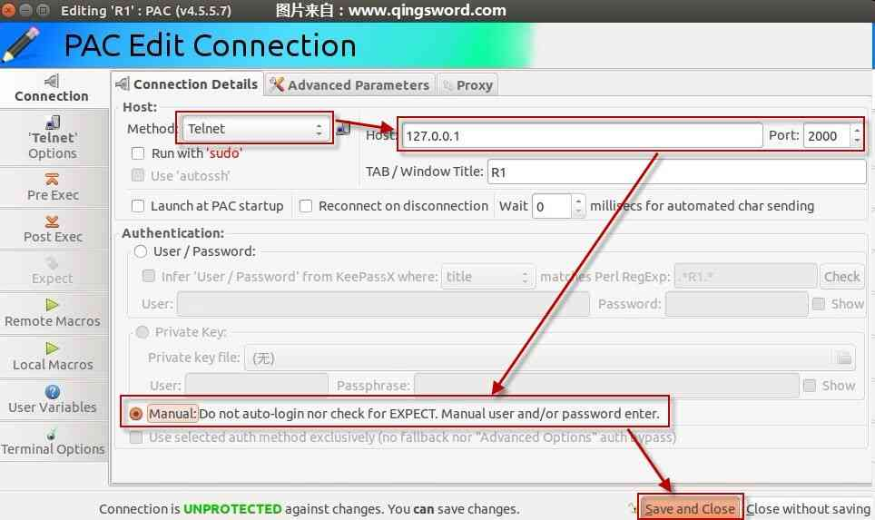回到主界面就能看到刚才配置的R1连接，点击Save保存连接，以后只要双击R1，就能连接上本地回环的2000端口，对应了GNS3中的路由设备；
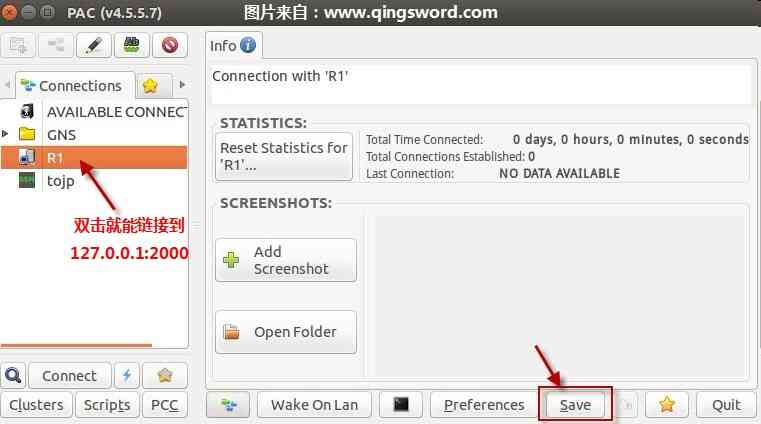重复上面的步骤，依次可以创建R2，R3等设备，在以后的实验中，使用几个路由，就直接双击几个路由直接就能连接上他们的控制台，十分方便。
注意：如果GNS3中"Local server"配置的地址是本例中的"192.168.100.1"，那么PAC中的telnet连接地址也要更改为这个IP，而不是"127.0.0.1"。